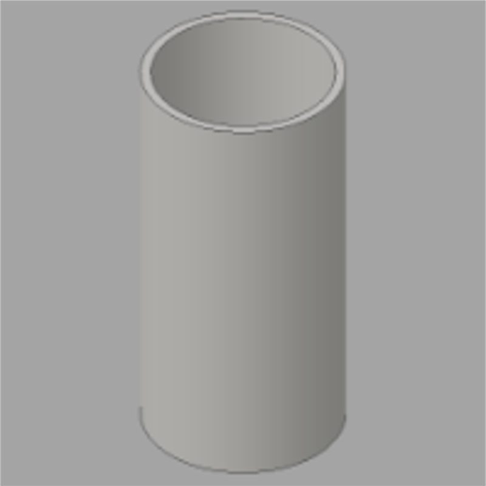
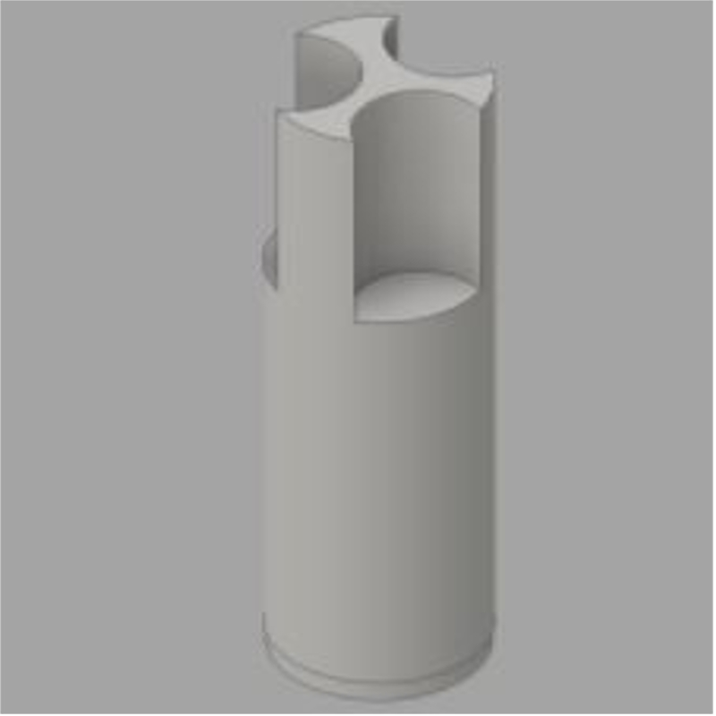
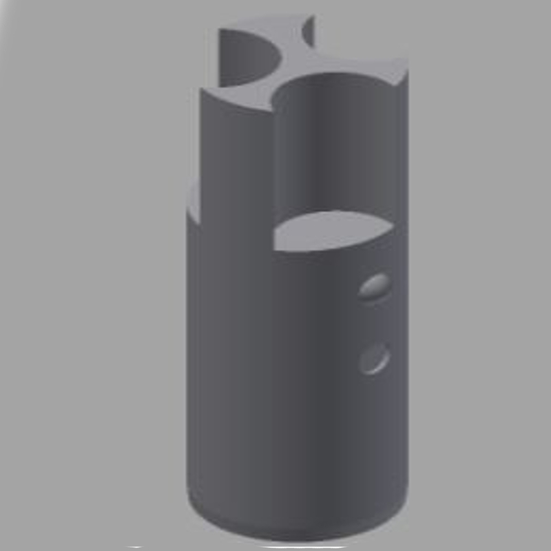
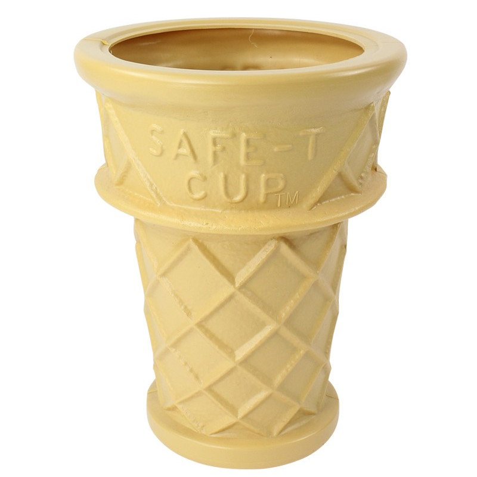
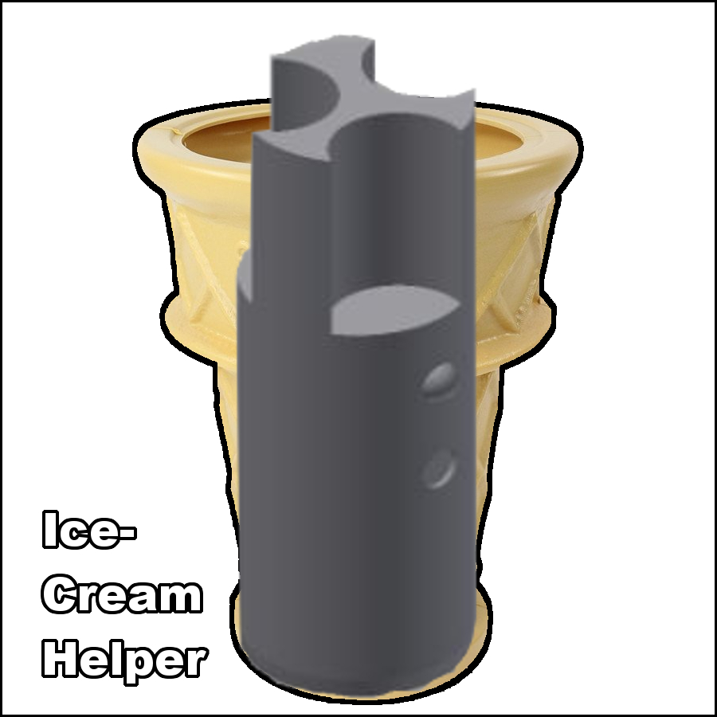

Ice Cream is a frozen food used as a snack or dessert. Most of time are made from dairy products. Typically sweetened.



- This first design was a basic base cylinder design. It does not work as it is used as a base to make further changes. There were many problems with this design. Many surrounded the fact that there was no way to get ice cream out of the cylinder.
- This second design improves from the first and made pushing the ice into a container easier. This was achieved with a handle which can help to twist hardened ice-cream. At the bottom of the container, there are sharp edges (Can't harm human) for easy cutting of the ice cream
- This Final Design includes an adjustable length. If extended the product it can get a full 2 inches of an ice cream cylinder, the extended length is 1.5 inches, it to can give people more options on the amount of ice-cream they need because not all ice-cream cone have the same amount of space. (The original length is .5 inches.)

